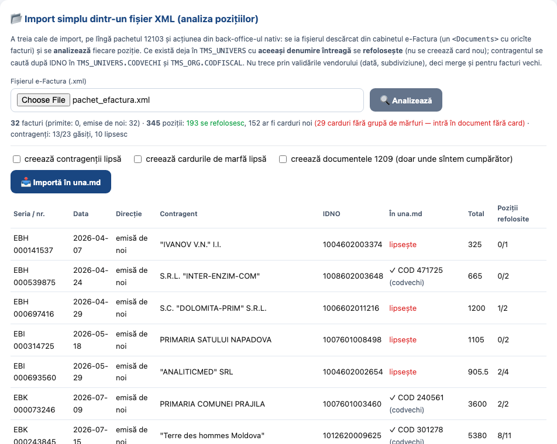
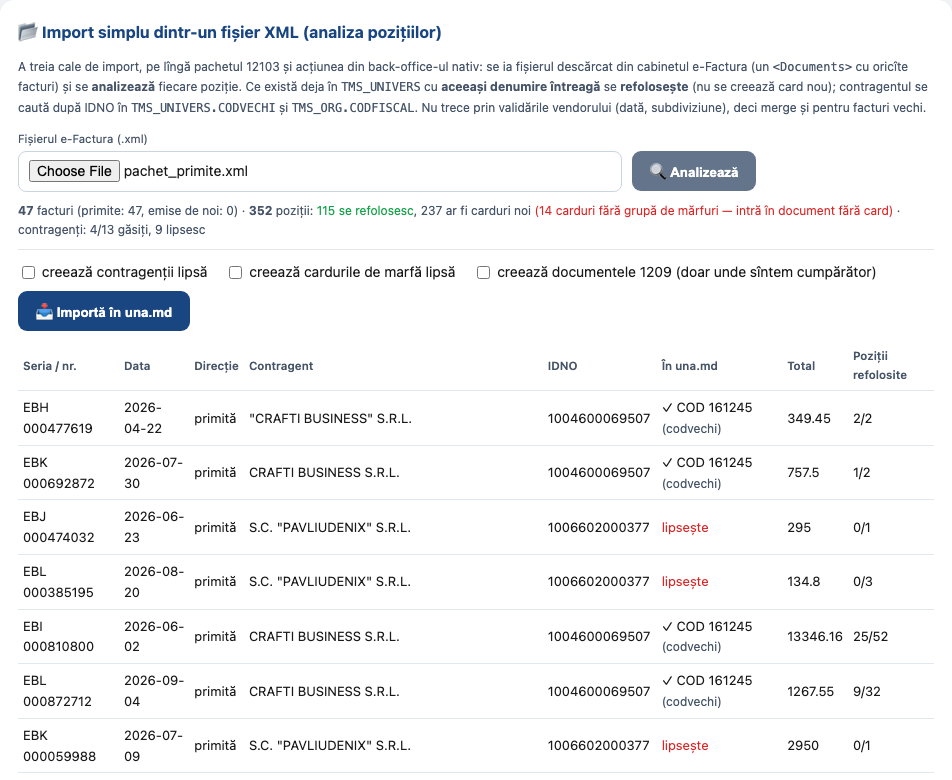

Act de testare — importul SIMPLU dintr-un fișier e-Factura
Data: 14.09.2026 · Cerința proprietarului: «ещё один способ импорта НН из e-factura как простой импорт данных с анализом входящих позиций — если встречаются уже в oracle tms_univers по полному совпадению, то использовать повторно; то же самое и про idno поставщика в поле codvechi и codfiscal» · Instrucțiunea: EFACTURA_INSTRUCTIUNE_TESTARE.html, §3a · Actul căii prin pachetul 12103: 13.09.2026.
1. Ce s-a construit
| Element | Ce face |
|---|---|
modules/efactura/simple.py | citește fișierul (<Documents> cu oricîte
<Document>), analizează pozițiile și le leagă de nomenclatorul existent; scrie facturile în
EFA_IN/EFA_IN_ROW; opțional creează ce lipsește |
| Potrivirea mărfii | denumirea întreagă în TMS_UNIVERS (TIP 'P', nearhivate):
întîi exact, apoi fără diacritice. În bloc, pe grupuri de 200 de denumiri — un pachet de 345 de poziții se
analizează în ~2 secunde |
| Potrivirea contragentului | după IDNO în TMS_UNIVERS.CODVECHI (convenția GR1 'E') și
TMS_ORG.CODFISCAL; rezultatul arată prin care dintre ele s-a găsit |
EFA_INBOX.create_doc_from_in | documentul 1209 direct din EFA_IN, fără
pachetul vendorului: TMDB_DOCS + VMDB_ST201M + VMDB01M_VINZ +
VMDB_ST201D, cardul fiind cel deja potrivit (MATCH_COD) |
EFA_INBOX.card_ok | verifică dacă marfa e legată de o grupă (TMS_SYSGRP)
— fără grupă, sistemul refuză rîndul, deci acesta intră fără card |
| Pasul nou în potrivirea obișnuită | EfaInbox.match: cod de bare → regulă
TMS_IMPORT_EFACTURA → denumirea întreagă. Beneficiază și fluxul prin SFS |
| Interfață / API | cardul «📂 Import simplu dintr-un fișier XML» pe pagina de test;
POST …/test/simple/analyze (nu scrie nimic) și POST …/test/simple/import |
2. Proba pe fișierul real al firmei
Fișierul dat de proprietar: export din cabinetul e-Factura,
EFactura_639249951468274651.xml, 804 KB.
| # | Pas | Rezultat | Verdict |
|---|---|---|---|
| 1 | Citirea fișierului | 32 facturi, 345 poziții, 299 denumiri distincte; toate
au ca furnizor chiar firma noastră (GRECU OFFICE GROUP) — adică sînt facturi emise de noi; direcția e
determinată automat din seller_idno | OK |
| 2 | Analiza (nu scrie nimic) | în ~2 s: 193 poziții se refolosesc (card existent găsit
după denumirea întreagă), 152 ar fi carduri noi; 29 dintre cardurile găsite nu sînt legate de o grupă de
mărfuri; contragenți: 13 din 23 găsiți după IDNO (codvechi), 10 lipsesc | OK |
| 3 | Potrivirea fără diacritice | pe denumirile distincte: 151 exact + 3 în plus după înlăturarea diacriticelor («Acuarelă» în factură ↔ «Acuarela» pe card) — fără acest pas s-ar fi creat 3 duplicate | OK |
| 4 | Import fără creare (implicit) | facturile alese au intrat în EFA_IN
(id 41, 42, 43) cu pozițiile în EFA_IN_ROW; la factura EBL 000389846 — 44 din 62 poziții
cu MATCH_KIND='denumire' și codul cardului real (ex.: «Caiet A5, 12 file, linie» → COD 165049) | OK |
| 5 | Contragentul | furnizorul din fișier găsit după CODVECHI: COD 479135
«GRECU OFFICE GROUP SRL»; scris în EFA_IN.SUPPLIER_COD | OK |
| 6 | Documentul 1209 (probă cu ROLLBACK, ca să nu rămînă nimic în producție) | din factura de 62 de poziții: document cu NRMANUAL EBL000389846, data 20.08.2026, NRSET 201, LEI,
USERID 1; antet DT 2171 / CT 5211, DTDEP 1, CTDEP 479135; seria/nr în cîmpurile FF; 62 rînduri, din care
37 cu card (restul — carduri fără grupă, lăsate goale); suma documentului = suma facturii = 4657,00;
toate cele 62 de rînduri identice cu sursa. ROLLBACK — baza a rămas neatinsă | OK |
| 7 | Protecția la dublare | import repetat al unei facturi deja introduse → sistemul însuși
refuză: «Seria si numarul facturii sunt deja introduse in doc-tt 443» (trigger TMDB01M_VINZ_FACT);
importul raportează eroarea pe factura respectivă și continuă cu celelalte | OK |
| 8 | Securitate | /test/simple/analyze și /test/simple/import fără
sesiune → 401; fișier străin → mesaj clar «fișierul nu conține documente e-Factura» | OK |
| 9 | Teste, instalator, desfășurare | tests/test_efactura.py: 74 passed (6 teste noi); instalatorul 0 FAIL, EFA_INBOX VALID; nufarul și office: login 200,
0 Traceback; https://nufarul.eminescu.md/login 200, https://officeplus.md/cos 200 | OK |
| 10 | Crearea nomenclatorului lipsă (bifele) | neexecutată pe date reale: ar adăuga 152 de carduri și 10 contragenți în nomenclatorul de producție — decizia proprietarului. Mecanismul e scris și acoperit de teste | SĂRIT (decizia proprietarului) |
Cardul nou pe pagina de test, cu fișierul real încărcat

2a. Proba pe facturile PRIMITE (al doilea fișier, tot 14.09.2026)
Proprietarul a trimis apoi exportul în care firma e cumpărător:
EFactura_639250048292811215.xml, 1,5 MB — 47 facturi primite de la 13 furnizori,
352 poziții. Acesta e cazul pentru care calea de import a fost făcută.
| # | Pas | Rezultat | Verdict |
|---|---|---|---|
| 11 | Direcția | toate cele 47 recunoscute ca primite (cumpărătorul = IDNO-ul nostru 1026602001837) — deci pentru ele se pot crea documente de intrare | OK |
| 12 | Analiza (≈2 s) | 115 poziții din 352 se refolosesc (card existent, potrivire pe
denumirea întreagă), 237 ar fi carduri noi, 14 carduri găsite nu au grupă de mărfuri;
furnizori: 4 din 13 găsiți după IDNO în CODVECHI — printre ei «TOTAL COMPUTER» COD 540710,
adăugat ieri prin puntea Contragenti, ceea ce confirmă întreg lanțul | OK |
| 13 | Persistarea analizei | toate cele 47 de facturi în EFA_IN (mediu
file) cu 352 de poziții în EFA_IN_ROW și potrivirile scrise în
MATCH_KIND='denumire' / MATCH_COD | OK |
| 14 | Documentul 1209 dintr-o factură primită reală (probă cu ROLLBACK) | EBI 000810800 de la «CRAFTI BUSINESS» S.R.L. (1004600069507), 02.06.2026, 13 346,16 lei, 52 poziții:
document cu NRMANUAL EBI000810800, NRSET 201, LEI, USERID 1; antet DT 2171 / CT 5211, DTDEP 1,
CTDEP 161245 «CRAFTI BUSSINES SRL, 1004600069507» (furnizorul găsit după IDNO); FF EBI 000810800;
52 rînduri, 20 cu card (25 potrivite, 5 fără grupă → lăsate goale);
suma documentului = suma facturii = 13 346,16; toate cele 52 de rînduri identice cu sursa.
ROLLBACK — nimic nu a rămas în baza de producție | OK |
| 15 | Crearea documentelor reale | neexecutată: un document 1209 mișcă stocul firmei,
iar ștergerea lui e blocată de sistem (trigger YBMB_DOCS). Rămîne la un clic al contabilului
(bifa «creează documentele 1209») | SĂRIT (decizia contabilului) |
Analiza celor 47 de facturi primite pe pagina de test

D13 — găsit în timpul acestei probe, reparat. În mijlocul analizei baza de producție a
repornit (
Reparat: orice interogare eșuată din analiză ridică acum eroare (
ORA-12537, apoi ORA-01033: ORACLE initialization or shutdown in progress).
execute_query înghite eroarea și întoarce o listă goală, așa că analiza a afișat liniștit
«0 poziții se refolosesc, 13 contragenți lipsesc» — o imagine falsă: dacă operatorul apăsa atunci
«creează», ar fi primit 13 contragenți și 352 de carduri duplicate în nomenclatorul de producție.
Reparat: orice interogare eșuată din analiză ridică acum eroare (
DbError), iar pagina
arată «baza de date nu a răspuns: …» în loc de zerouri; importul se oprește în același punct și nu creează nimic.
Acoperit de un test care simulează căderea rețelei.2b. Importul executat pe datele reale (după «da, fă-o»)
| Pas | Ce s-a făcut | Rezultat |
|---|---|---|
| 1. Contragenții | bifa «creează contragenții lipsă» | 9 furnizori creați
(COD 540715–540729) cu IDNO în CODVECHI și rîndul TMS_ORG.CODFISCAL:
PAVLIUDENIX, POLIGRAF-DESIGN, LICENSE SOFT, I.P. STISC, IMPRESO-PRINT, I.P. CTIF, FALCOM TEXTIL,
ULTRA DISTRIBUTION, TIPOGRAFIA DIN BALTI. Acum toate cele 13 firme din pachet sînt în nomenclator
și toate cele 47 de facturi au SUPPLIER_COD |
| 2. Cardurile de marfă | bifa «creează cardurile de marfă lipsă» | 168 carduri active
(COD 540732–540968), UM adusă la forma casei («шт», «un.», «buc» → buc.).
Vezi incidentul I1 de mai jos |
| 3. Repotrivirea | reluarea analizei după creare | 329 din 352 poziții au acum card (erau 115); 23 rămîn fără card |
| 4. Grupele de mărfuri | propunere automată, nescrisă | 157 din 168 carduri au o grupă propusă după cardurile existente cu denumire asemănătoare: 73 sigure, 73 de verificat, 11 slabe, 11 fără propunere. Raportul: EFACTURA_GRUPE_MARFA_2026-09-14.html |
| 5. Documentele 1209 | nu s-au creat | fără grupă de mărfuri cardul nu intră în document, deci acum 228 din cele 329 de poziții potrivite ar rămîne oricum fără card. Documentele se fac după ce grupele sînt confirmate — fiecare document mișcă stocul și nu poate fi șters |
I1 — incident, remediat în aceeași sesiune. La crearea cardurilor s-au făcut
237 în loc de 168: verificarea «există deja» se uita doar la rezultatul analizei, nu și la cardurile
create cu cîteva rînduri mai devreme în același import, așa că o denumire care apare pe mai multe rînduri
sau facturi primea cîte un card de fiecare dată (12 copii pentru «Hirtie pentru tehnica de birou REY COPY»).
Remediere: cele 69 de duplicate au fost arhivate (
Cauza a fost reparată în cod (un card pe DENUMIRE, nu pe rînd, cu index normalizat) și acoperită de un test care repetă aceeași denumire pe două facturi și în două scrieri diferite.
Remediere: cele 69 de duplicate au fost arhivate (
ISARHIV='2', păstrînd cardul cu
codul cel mai mic din fiecare denumire) pe calea prevăzută de sistem — DOC_CHANGE_ISARHIV +
iniparam_adminlevel + utilizatorul 1, care e în grupa UNIVERS/DEL/ALLOW; ștergerea
propriu-zisă e blocată de trigger. Nu au mai rămas duplicate active, iar nicio poziție nu arată spre un card
arhivat.
Cauza a fost reparată în cod (un card pe DENUMIRE, nu pe rînd, cu index normalizat) și acoperită de un test care repetă aceeași denumire pe două facturi și în două scrieri diferite.
3. Defectele găsite în timpul probelor (toate reparate)
D10 — cel important. Un
Reparat: inserare rînd cu rînd, atît în
INSERT ... SELECT cu mai multe rînduri în
VMDB_ST201D (view cu trigger INSTEAD OF peste tipuri obiect) scria în toate
rîndurile valorile ultimului rînd: la proba pe 62 de poziții toate au primit același card
(DTSC=164112) și aceeași sumă (15,00), deși sursa avea 44 de carduri diferite și sume diferite.
Cu 1–2 poziții defectul nu se vedea, de aceea a trecut neobservat la documentele 441 și 443.
Reparat: inserare rînd cu rînd, atît în
create_doc_from_in, cît și în
create_docs_1209 (calea prin pachetul 12103, care avea exact același tipar). După reparație:
62 de rînduri identice cu sursa, suma documentului = suma facturii.| # | Defect | Cauza | Reparație |
|---|---|---|---|
| D11 | Documentul pica întreg cu «Товар не привязан к товарной группе!» din cauza unei singure poziții | trigger YBON_PRIH → Ylin_Docs.get_KTN: cardul trebuie legat de o grupă
în TMS_SYSGRP/TMS_SYSGRPH; 7 din 44 de carduri potrivite nu erau |
EFA_INBOX.card_ok: cardul se pune doar dacă are grupă, altfel rîndul intră fără card (ca în
Delphi); analiza arată separat cîte astfel de poziții sînt |
| D12 | La o eroare în mijlocul creării putea rămîne un antet de document orfan | blocul nu avea punct de revenire | SAVEPOINT efa_doc_from_in + ROLLBACK TO în tratarea excepției;
COMMIT-ul intern scos — tranzacția o închide apelantul |
4. Observații pentru proprietar
| # | Observație | Propunere |
|---|---|---|
| O5 | — | |
| O9 | Din cele 13 firme furnizoare doar 4 sînt în nomenclator; 237 din 352 de poziții nu au card | înainte de importul în masă: bifele «creează contragenții lipsă» și «creează cardurile de marfă lipsă», apoi legarea cardurilor noi de grupe de mărfuri |
| O10 | Cele 47 de facturi primite stau acum în EFA_IN (mediu file, id 41–107)
doar ca analiză — documente contabile NU s-au creat | contabilul alege facturile și apasă «creează documentele 1209»; fiecare document mișcă stocul, iar ștergerea lui e blocată de sistem |
| O6 | 152 de poziții din 345 nu au card, iar 29 au card fără grupă de mărfuri | înainte de un import în masă: bifa «creează cardurile de marfă lipsă», apoi legarea lor de grupe în back-office-ul nativ (altfel nu intră în documentele de intrare) |
| O7 | 10 contragenți din 23 lipsesc din nomenclator | bifa «creează contragenții lipsă» îi
adaugă cu IDNO în CODVECHI și CODFISCAL, exact ca puntea Contragenti |
| O8 | Rîndurile rămase în EFA_IN de la probă: id 41, 42, 43 (mediu file) |
sînt doar analiză, nu documente contabile; se pot lăsa sau șterge la cerere |
5. Adrese live
- Pagina de test (cardul «📂 Import simplu»): https://officeplus.md/UNA.md/orasldev/efactura/test · nufarul
- Administrare și jurnalul SFS: https://officeplus.md/UNA.md/orasldev/efactura/
- Acest act: officeplus.md · nufarul
- Instrucțiunea de testare: officeplus.md